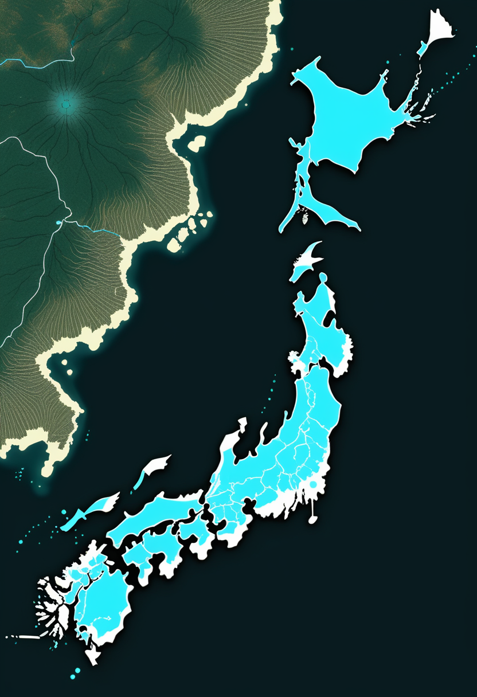
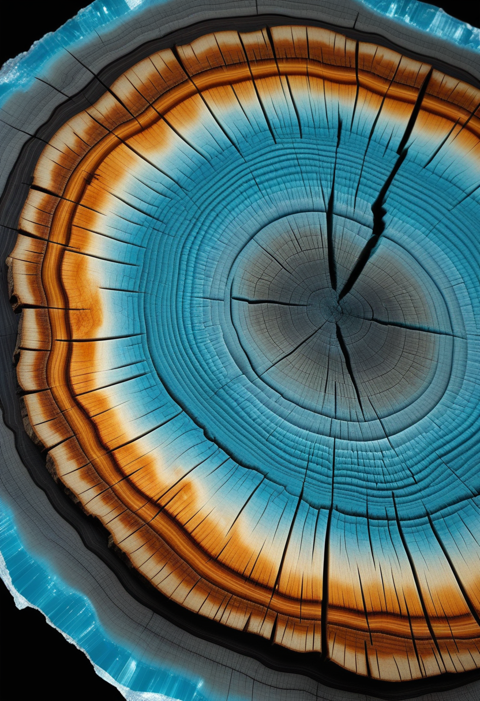

PAHOは米国・メキシコ・ボリビアの麻疹排除国の地位を正式に取り消した。エボラは西アフリカ流行の2倍の速さで拡大し、医療者のストライキが対応を妨げている。
汎米保健機構(PAHO)は現地時間11/17、11/10〜13に開いた地域検証委員会(RVC)の評価を受け、米国・メキシコ・ボリビアの3か国で麻疹の土着伝播が再確立されたと発表した。判断基準は『同一の遺伝子型・系統のウイルスが12か月以上途切れることなく国内で広がったこと』。バルボサ事務局長は『地域への重大な警告だが、取り返しのつかない後退ではない』と述べている。米国は2000年から26年間保ってきた地位を失い、米CDCの確定例は11/12時点で5,412例。地域全体では11/13時点で確定58,213例・死者82人にのぼり、前年同期の12,806例から急増した。RVCは3か国に対し、高リスク地域の特定、3か月ごとの能動的症例発見、医療従事者の接種歴確認、ワクチン2回接種率95%以上の維持などを優先課題として勧告している。地位を取り戻すには、国内での連続した流行を少なくとも12か月断つ必要がある。カナダは2025年11月に同じ理由で地位を失い、現在も回復に取り組んでいる。
NeurologyLive(11/4)のインタビューで、成人のSMA(脊髄性筋萎縮症)を診る臨床医は、ヌシネルセンやリスジプラムなど薬の選択肢が増えた一方、リハビリ・呼吸管理・栄養指導などを組み合わせた多職種ケアへの診療報酬が『必要な水準に届いていない』と述べた。乳幼児期に発症し治療で生存期間が延びた患者が成人期に達する例が増えており、大人になったSMAの人の生活を長期的に支える診療体制づくりが、薬の進歩に比べて遅れているとの指摘だ。
英国の患者団体Muscular Dystrophy UKによると、Scholar Rockは筋肉に働く追加治療薬アピテグロマブ(米国名ISEMBYLD、9/11に米FDA承認)について、英国での承認申請を当面行わない方針だ。一方、日本ではScholar Rockの第3四半期決算発表(11/10)で優先審査の対象として受理されたことが確認されており、国によって新薬への入手のしやすさに差が出ている。英国での申請見送りの具体的な理由は、患者団体の発表からは確認できなかった。
SMA治療薬の選択肢は国ごと・場面ごとに不均等に広がっている。日本は優先審査で前に進み、英国は申請を見送った。薬が増えても、それを支える多職種ケアの報酬はまだ追いついていない。
ワシントンで開催中の北米神経科学学会(SfN 2026、11/14〜18)で、意思疎通のBCIに関する研究が3件発表された。UCデービスのマヘシュ・ワイラガー氏らは、抑揚(声の高さ)を操れる合成音声で聞き取りやすさが上がり、参加者が実際に歌えたと報告。マサチューセッツ総合病院のサーギー・ルービン氏らは、完全閉じ込め状態の人がBCIで1年以上にわたり自力で意思疎通を続けたと発表し、ジョージア工科大学/エモリー大学のチェタン・パンダリナス氏らは、iPhone上で動く携帯型の脳→文字変換システムを示した。いずれも学会発表の段階で、査読論文はまだ出ていない。
Synchronは血管内インプラント『Stentrode』の第2世代治験の登録を自主的に止めているが、STATなどの報道によれば、これと並行してニューヨーク拠点での人員削減も行い、新しい機器の開発を進めているという。CEOのトム・オックスリー氏は、システムには数百の構成要素があり『特定の一部品で足止めされていた』と説明しており、会社は安全性の問題ではなく、FDAの指示でもないとしている。レイオフの規模やリード線問題との直接の関係は、現時点の報道からは確認できない。再開時期は未定。
SfNでは『病院の外で毎日使えるか』に焦点が移り、歌える声・1年以上の自立利用・携帯端末での変換という3つの答えが示された。一方でSynchronは治験停止に続く人員削減という、足もとの厳しさも抱えている。
PAHOは地域検証委員会の評価を受け、米国・メキシコ・ボリビアで麻疹の土着伝播が再確立されたと正式に発表した。米国は26年間保ってきた地位を失い、是正行動計画の提出が必要になる。米CDCの確定例は11/12時点で5,412例、地域全体では11/13時点で確定58,213例・死者82人。詳しくは本号の今日の一本を参照。
DRCのエボラ(ブンディブギョ型)は、5/15の宣言以降、政府データで確定例1万1千人超・死者5,500人超に達している。ロイター(11/17)は、感染・死亡の増え方が2014〜16年の西アフリカ流行(確定2万8,600例超・死者1万1千人超)の最初の6か月の約2倍だと報じ、記録に残る中でも最速の拡大ペースと評した。今回はコンゴで17回目の流行にあたり、これまで最大規模だった2018〜20年の流行(確定3,481例・死者2,299人)をすでに大きく上回っている。医療従事者は8月以降の給与未払いを理由にストライキを行い、WHOのテドロス事務局長はこの支払いの遅れが対応を遅らせていると指摘した。原因のブンディブギョ型にはまだ承認されたワクチンも治療薬もない。

第45週(11/2〜8)の全国の定点当たり報告数は11.00人で、前週の10.26人から増えた。都道府県別では北海道が28.32人で最多。日経メディカルは『東日本を中心に増加、西日本では減少傾向か』と分析している。第46週分は11/20公表予定。
麻疹の排除喪失は『見込み』から3か国の確定へ進み、是正行動計画という次の実務段階に入った。エボラは過去最悪級の速さで広がり、給与未払いというごく現実的な事情が対応を妨げている。季節性のインフルエンザも静かに増え続けている。
ESAの宇宙望遠鏡ユークリッドが、初の彗星『C/2026 S1』を見つけた。木星と土星の軌道の間、約13億km先にあり、9/16〜24の観測データから発見された。同じ11/16には小惑星『2026 WA』も見つかり、翌11/17に月までの距離の約3分の1(約12万6,400km)を通過したが、衝突の危険はなかった。
NEJMに11/16掲載された試験で、104週時点のBMI変化はセマグルチド群マイナス9.4%、プラセボ群プラス8.4%だった。有害事象は96%対93%とほぼ同程度だが、胃腸症状は薬の群で多く、1人が中止した。小学生年齢への適応拡大の議論につながる結果である。
中国国家航天局(CNSA)は11/13、木星を周回し衛星カリストの周回・着陸探査をめざす『天問4号』の科学ペイロード募集を告知した。11/9には嫦娥の月試料の国際貸与申請の募集も出ている。量子・素粒子分野では、CERNが11/23〜27に高エネルギー物理への量子技術の国際会議(QT4HEP 2026)を開く予定。
ユークリッドは初めての彗星を見つけ、小惑星は静かに地球のそばを通り過ぎた。小児医療では薬がBMIを着実に下げ、中国は木星の衛星という遠い目標の準備を進めている。

アリゾナ大学のシャーロット・ピアソン氏らの研究チームが、トルコの遺跡から出土した木材の年輪を個別に放射性炭素年代測定し、暦年が確定した年輪データと組み合わせて建物の建築年代を精密に求めた。得られた年代をアッシリア暦に基づく歴史記録、バビロニアの金星観測記録、極域の氷床コアに残る火山噴火の痕跡と照合したところ、アラスカのアニアクチャク火山の噴火が紀元前1628年ごろ(表記にはなお幅があり要確認)、バビロン陥落が紀元前1587年ごろとする年代に最も強く一致した。紀元前1194〜1192年の深刻な干ばつがヒッタイト帝国崩壊の一因だった可能性も指摘されている。研究者は、暦年ごとの放射性炭素測定が年代体系を洗練する新たな機会になるとしている。
ヨーテボリ大学のアンダース・フィッシャー氏とライプニッツ考古学センターのジョン・メドウズ氏らが、デンマーク・セイェロー島の貝塚から1956年に出土した狩猟採集民の人骨『ロドハルス男性』を分析し、学術誌Antiquityに発表した。年代は紀元前3890〜3770年ごろで、農耕民がデンマークに現れた時期とほぼ重なる。歯の象牙質の層を調べると、幼少期は貝類・カレイなどの平たい魚・ウナギを食べ、思春期になると陸上由来のタンパク質の割合が増えていた。淡水魚を食べた形跡がないことから、研究チームは、この陸上食物が農耕民から提供されたものである可能性が高いと見ている。埋葬の様式は初期農耕民のものに似ていたが、前腕の骨には高い筋肉負荷を示す変化も見られ、農耕民の生活の一部を取り入れつつ、祖先からの伝統の多くを保っていたとみられる。
グリフィス大学のクリス・クラークソン氏らが、King Abdullah University of Science and Technology・サウジ文化遺産委員会と共同で、サウジアラビアの遺跡Uruq Aljelibah(約12万5千年前、かつて大きな淡水湖の岸辺だった場所)を発掘し、5,000点を超える遺物とカバ・水牛・ラクダ・ガゼル・オリックスなどの化石を見つけた。石器の尖頭部には接着剤や植物繊維を使った加工の跡を示す有機物の残留物が残り、植物性の毒が使われた可能性も指摘されているが、毒の使用はまだ推定の段階だ。クラークソン氏は、この遺跡が現在は乾燥地帯となっている地域での初期人類の生活に『非常に詳細な全体像』を与えるとし、アフリカから移動した一部の初期人類が緑豊かだった当時の『グリーン・アラビア』にとどまり、別の集団はアジアへ進んだ可能性を示唆している。
年輪と氷床コアは遠い災厄の年代を一年刻みで結び直し、デンマークの狩猟採集民は海と陸の間で食を変えながら生き延びた。12万5千年前のアラビアでは、緑の大地にとどまった人々が武器に工夫を重ねていたのかもしれない。
今号の軸は『見込みが確定になった日』だった。PAHOは米国・メキシコ・ボリビアの麻疹排除喪失を正式に発表し、是正行動計画という次の実務段階に入った。エボラは記録に残る中でも最速級の速さで広がり、給与未払いというごく現実的な事情が対応を妨げている。BCIでは歌える合成音声や1年以上の自立利用という『毎日使える』答えが示された一方、年輪と氷床コアは遠い火山の噴火と王朝の滅びを一年刻みで結び直し、12万5千年前のアラビアでは緑の大地にとどまった人々が武器に工夫を重ねていた。
おやすみなさい、また明日。